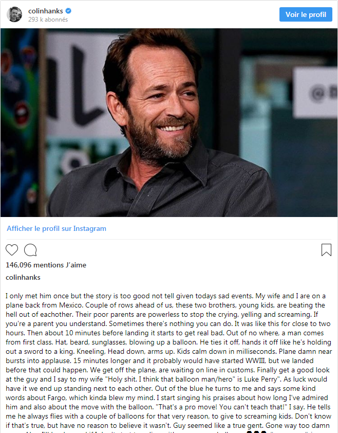

Colin Hanks posted an incredible story about an experience he had with Luke Perry, the “90210” actor whodied on Monday at the age of 52 .
“I only met him once but the story is too good not tell given todays sad events,” wrote Hanks on Instagram on Monday night.
The actor wrote that while on a plane from Mexico to the United States, he and his wife saw two young kids “crying, yelling and screaming” at each other.
“If you’re a parent you understand. Sometimes there’s nothing you can do. It was like this for close to two hours,” wrote Hanks.
He then says that just before the plane landed, when the fighting became worse, a man came out of first class blowing up a balloon.
“Hat, beard, sunglasses, blowing up a balloon. He ties it off, hands it off like he’s holding out a sword to a king. Kneeling, Head down, arms up. Kids calm down in milliseconds. Plane damn near bursts into applause,” says Hanks, who only realized after they deplaned that the hero of the hour happened to be Perry.
Hanks said that the pair ended standing next to each other on the line at customs and “out of the blue,” Perry said “some kind words about Fargo, which kinda blew my mind.” Hanks appeared in the first season of “Fargo” on FX.
“I start singing his praises about how long I’ve admired him and also about the move with the balloon. ‘That’s a pro move! You can’t teach that!’ I say. He tells me he always flies with a couple of balloons for that very reason, to give to screaming kids,” Hanks went on. “Don’t know if that’s true, but have no reason to believe it wasn’t. Guy seemed like a true gent.”
The “Beverly Hills, 90210” and “Riverdale” star died after suffering a stroke at his Sherman Oaks, California, home last week. He was the father to son Jack, 21, and daughter Sophie, 18.